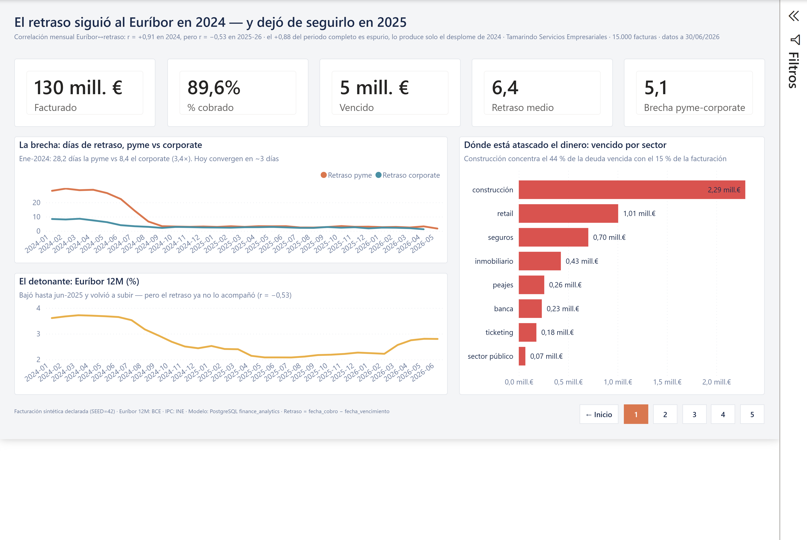
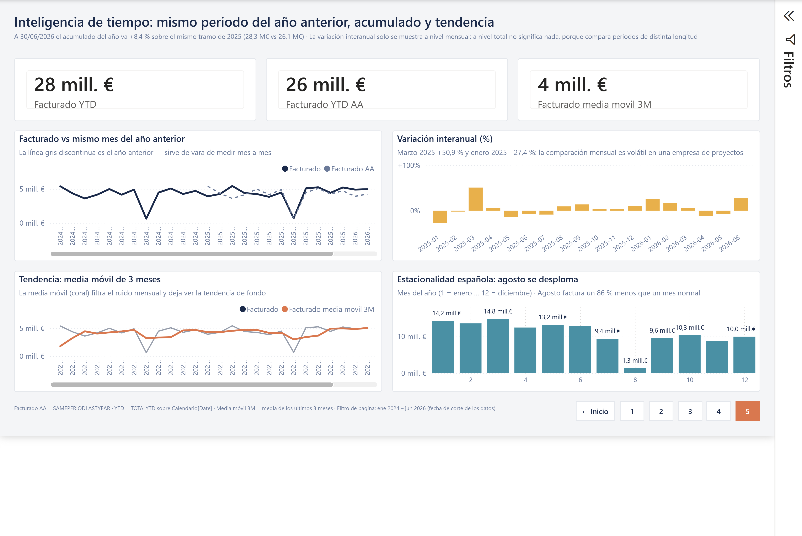
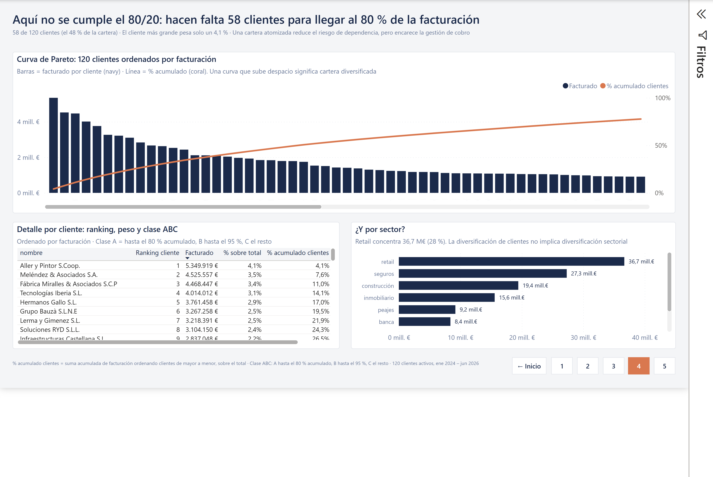
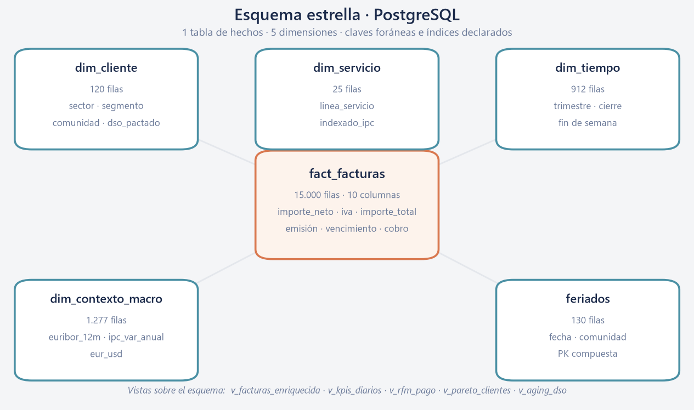
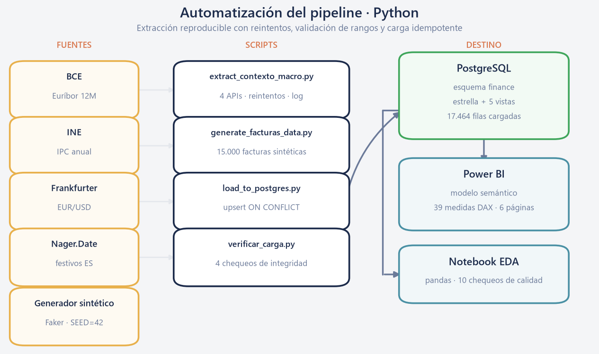
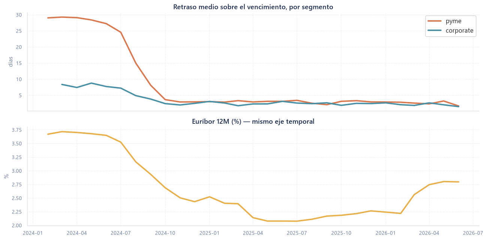

Power BIINTERACTIVO
Dashboard
KPIs financieros y el cruce con el Euríbor. La correlación se invierte entre tramos.

Power BI · DAXINTERACTIVO
KPIs e inteligencia de tiempo
Interanual, acumulado del año y media móvil sobre calendario marcado como fecha.

Power BIINTERACTIVO
Pareto y concentración ABC
Aquí no se cumple el 80/20: hacen falta 58 de 120 clientes para el 80 % de la facturación.

PostgreSQL
Base de datos
Esquema estrella con claves foráneas, cinco vistas analíticas y procedimientos almacenados.

Python
Automatización
Extracción de cuatro APIs con reintentos y validación, y carga idempotente en Postgres.

Python · pandas
Notebook EDA
Diez chequeos de calidad, detección de outliers y el cruce con el contexto macro.